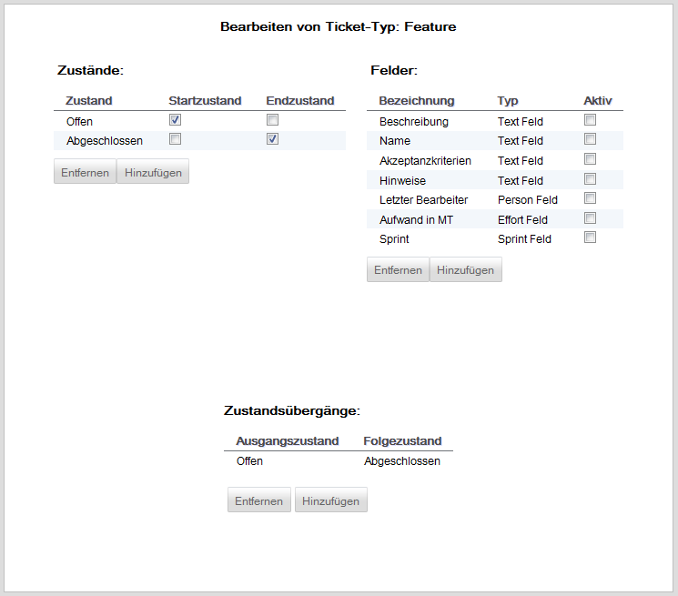

Tickettypen bearbeiten
Nach der Auswahl des gewünschten Tickettypen wird die folgende Oberfläche angezeigt.

Bei der Administration von Tickettypen stehen die folgenen Möglichkeiten zur Verfügung:
Einem Tickettypen zugeordnete Zustände können entfernt werden, sofern es sich nicht um Standard-Typen eines Tickettyps handelt.
Dazu muss der gewünschte Zustand ausgewählt und danach durch Betätigen des Buttons "Entfernen" gelöscht werden.
Setzten eines Zustands als Startzustand
Ein Zustand eines Tickettyps kann als Startzustand definiert werden. Dazu wird der in der Spalte "Startzustand" die Checkbox des gewünschten Startzustands aktiviert. Ein zu diesem Zeitpunkt als Startzustand definierter Zustand wird gleichzeitig deaktiviert.
Setzten eines Zustands als Endzustand
Einem Tickettypen können mehrere Endzustände zugeordnet werden. Sobald der Zustand eines Ticket in einen Endzustand geändert wird, wird dieses als inaktives Ticket angezeigt und kann nicht mehr verändert werden.
Der Endzustand wird durch Aktivieren der Checkbox des jeweiligen Zustands in der Spalte "Endzustand" gesetzt. Beachten Sie dabei bitte, dass ein Zustand nicht gleichzeitig als Start- und Endzustand gesetzt sein kann.
Einem Tickettypen zugeordnete Felder können entfernt werden, sofern es sich nicht um Standard-Felder eines Tickettyps handelt.
Dazu wird das zu entfernende Feld mit einem Klick in die Zeile des Feldes ausgewählt und danach mit Betätigen des Buttons "Entfernen" gelöscht.
Einem Tickettypen zugeordnete Felder können aktiviert oder deaktiviert werden, wobei dieser Zustand von dem jeweiligen im Bereich "Zustände" gewählten Zustand abhängt. Auf diese Weise lassen sich zum Beispiel einige Felder erst beim Erreichen eines bestimmten Zustands benutzen.
Zum Aktivieren eines Felds bezogen auf einen Zustand muss zunächst im Bereich "Zustände" der Zustand gewählt werden und danach die Checkbox in der Spalte "Aktiv" des gewünschten Feldes des Bereichs "Felder" aktiviert werden. Eine Deaktivierung erfolgt gemäß der gleichen Vorgehensweise, allerdings wird in diesem Fall die Checkbox deaktiviert.
Entfernen eines Zustandsübergangs
Einem Tickettypen zugeordnete Zustandsübergänge können entfernt werden.
Dazu wird der zu entfernende Zustandsübergang mit einem Klick in die Zeile des Zustandsübergangs ausgewählt und danach mit Betätigen des Buttons "Entfernen" gelöscht.
Created with the Personal Edition of HelpNDoc: Easily create CHM Help documents